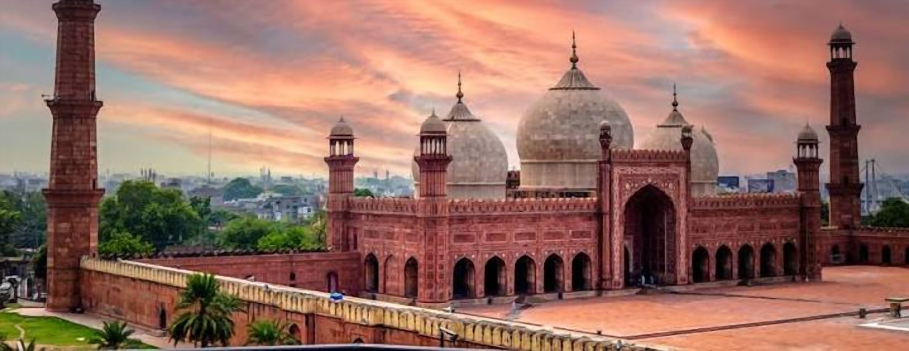

Fast and Cheap Car Towing Service Lahore
When your car breaks down in the middle of the road and the engine will not start, you need immediate assistance. We understand, which is why we have a quick car towing service available in Lahore, 24/7.
Towing Service Lahore
Our towing service offers assistance to those in need of help with breakdowns, accidents, flat tyres, dead batteries and car won’t start. Simply let us know where you are and what the issue is. We will then send the closest tow truck to your location. We will give you a clear quote for the job and ensure your car is treated with care.
Available 24/7, 7 Days a Week.
Towing Service Near Me
When searching for a towing service near me, you want to ensure that they can get to you quickly. We use your location to send the nearest tow truck.
Most of the time, we can find you by using your live location on WhatsApp or letting us know a local landmark.
Car Tow Service Lahore
All breakdowns are different and we have a car tow service available in Lahore for:
- Breakdown – If your car has broken down due to engine failure, overheating, transmission issues or the car won’t start.
- Accidents – We will help move your damaged car safely back to your home, workshop or insurance yard.
- Flat Tyre/Battery – If your car cannot be moved we will tow it.
- Flatbed – This is the best option for luxury cars, low clearance cars and AWD’s. The car will be off the ground.
- Transfers – If you need to move your car to a workshop or showroom, we can help.
- Long Distance – If you need to move your vehicle from Lahore to another city.
Car Towing Service Near Me
- Contact us via phone or message. Let us know where you are, what type of car you have and a brief description of the issue.
- We will give you a clear quote. We will let you know how much the job will cost upfront depending on how far away you are and what type of car you have.
- We will come to you. One of our trained drivers will come to you with the correct equipment for your car.
- Delivery. We will ensure your car is secured and delivered to your workshop, home or chosen address.
Simple and no forms to fill in.
Nearest Towing Service Lahore
Our team can come to you anywhere in the city. DHA, Gulberg, Johar Town, Model Town, Bahria Town, Cantt, Iqbal Town, Wapda Town, Garden Town, Township, Faisal Town, Ferozepur Road, Canal Road, Mall Road, Ring Road and Motorway M-2.
If you are on the motorway or outskirts, please give us a call and we can confirm the best way to get to you.
Car Recovery Service Lahore
A car recovery service ensures your car is treated with care. Our drivers will use the correct strapping, wheel clamps and loading methods to ensure your car isn’t scratched, dented or put under stress.
We can recover sedans, hatchbacks, SUV’s, jeeps, vans, luxury cars and cars stuck in ditches, parking basements or tight lanes. If your car is stuck off-road please let us know when you call so we can send the correct equipment.
Why Drivers Choose Us for Towing in Lahore
When looking for a towing company in an emergency situation, we make it easy for you:
- Available 24/7 – We are always available via phone.
- Clear Pricing – We confirm the price beforehand.
- Professional Drivers – Our drivers are experienced and know how to load and secure different types of vehicles.
- Correct Equipment – We have flatbed and chain towing for your car.
- Friendly and Clear Communication – We will keep you updated until we arrive.
- Local Knowledge – We know the roads in Lahore, shortcuts and traffic, meaning we can get to you quicker.
Truck Towing Near Me
We can also assist with van towing, pick-up towing, jeep towing and other light commercial vehicles. Please let us know what model and approximate weight of the vehicle you have and we will send the correct equipment.
For very heavy trucks please give us a call first to confirm the correct recovery method.
Low Cost Towing Prices
We understand that in an emergency situation you don’t want to be overcharged. Our towing prices depend on:
- How far away you are.
- What type of vehicle you have.
- What time of day it is and road conditions.
- If you require flatbed towing or specialist recovery.
We will let you know the final price when we call. If anything changes we will let you know first.
What to Do If Your Car Breaks Down
- If possible, move to a safe place. Pull over as far away from traffic as possible.
- Turn on your hazard lights.
- Place a warning triangle behind your vehicle if you have one.
- Ensure you are in a safe place.
- Give us a call and let us know your live location.
- Don’t try to carry out any risky repairs on the road.
Nearby service areas
Service area: Lahore
City-level map showing the service area. Contact us with your exact location to confirm availability.
FAQs
What is the best towing service in Lahore?
The best towing service in Lahore will be one that is available 24/7, gives you a clear quote and uses the correct equipment to ensure your car is protected. We offer all of these and can get to you quickly throughout the city.
How quickly can a tow truck get to me in Lahore?
Depending on your location, traffic and how many tow trucks we have available, we can get to you as quick as possible. We will send the nearest tow truck and keep you updated on the call.
How much does car towing cost in Lahore?
Prices will depend on how far away you are, what type of car you have and what type of towing you require. We will give you an exact price of how much it will cost.
Do you offer flatbed towing for luxury cars and SUV’s?
Yes! We can offer flatbed towing for luxury cars, SUV’s, low clearance cars and AWD’s. All the wheels will be off the ground reducing the risk of damage.
Is your car tow service available at night and on holidays?
Yes! Our car tow service in Lahore is available 24/7, 7 Days a Week.
Need help right now?
Call or message MECHOTOW and explain your situation. The team will confirm availability and next steps with you.